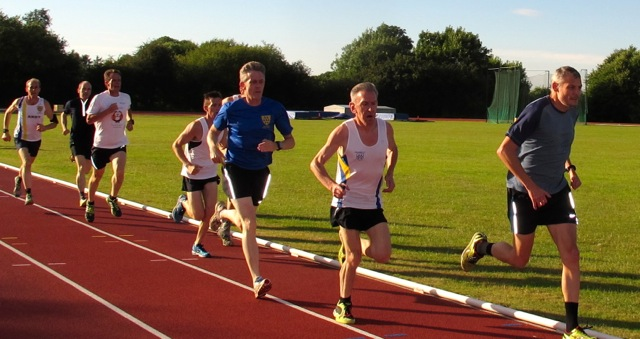
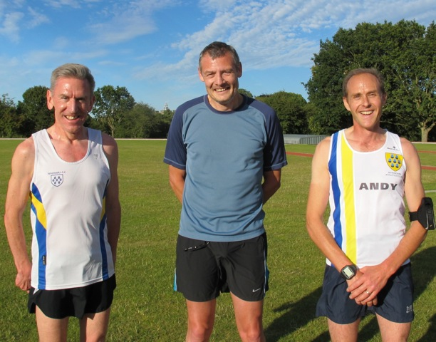

Each year since 1999, Sevenoaks AC has held a club race over the classic mile distance, recording club bests for all age groups up to age 75.
The fastest run ever was by Darrell Smith, who recorded 4 minutes 35 in 2005 at the age of 35. Richard Pitcairn-Knowles holds the record in the oldest (over 75) category, with an impressive 7 minutes 25 achieved in 2009 at the age of 77.
At 7 pm last Thursday (03/07/14), on a fine summer evening 15 athletes lined up on the Sevenoaks School track to see if they could achieve new records...
and within a few minutes two new records were set.

In a hard-fought race, 51-year old Keith Dowson triumphed in 5 minutes 14 seconds to beat Lyndon Collins' 12-year old M50 record by 1 second. Dowson is having a great season, having recently completed the Edinburgh Marathon in 2 hours 50, coming 54th out of 8600 runners.
Second, in 5 minutes 18 was 44-year old Andy Ashlee, one of the club’s ultra-marathon specialists. "This is a bit short for me" he said "I’m more used to 50 and 100 mile races, but it was my first mile race and I’m surprised and happy to come 2nd." Andy is currently training for the gruelling 100 mile Tour Du Mt. Blanc race at the end of August.
In 3rd place was 58-year old Jim Duffill in a new M55 record time of 5 minutes 20 seconds, shaving 12 seconds off Lyndon Collins' record set in 2005. Duffill has just returned to racing after a long layoff, but is no stranger to the track, holding the club records for M45 at 400m, 800m, 1500m, mile and 3000m. In addition he holds M50 records at 800m, 1500m and 3000m. This is his first M55 record – probably more will follow.

Here are the results of this year's race (03/07/2014).
Jim Knight/John Denyer